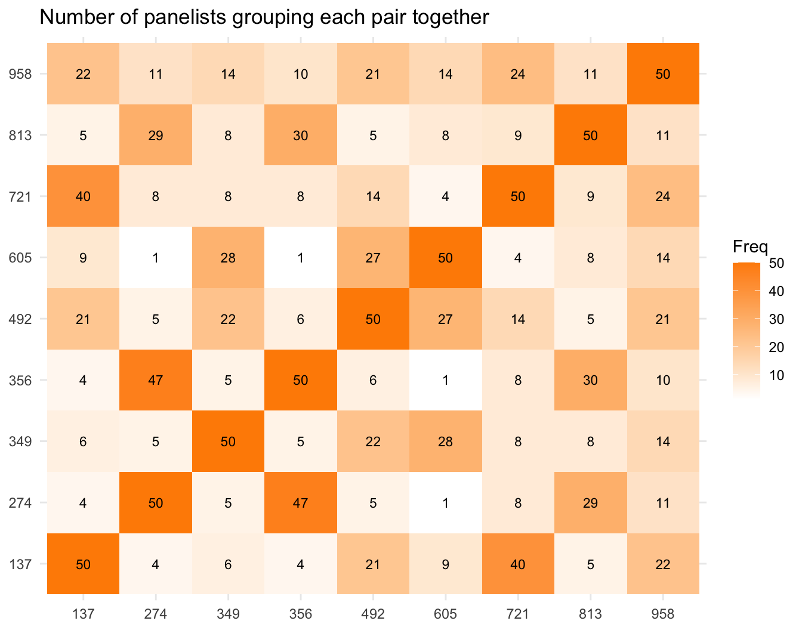
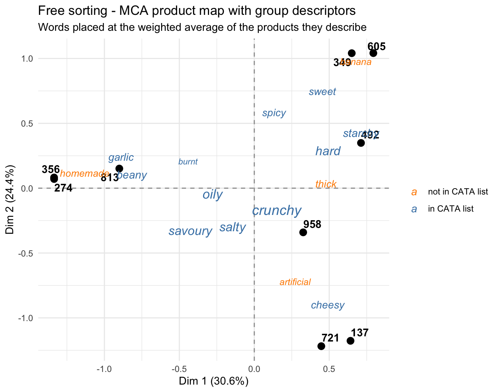
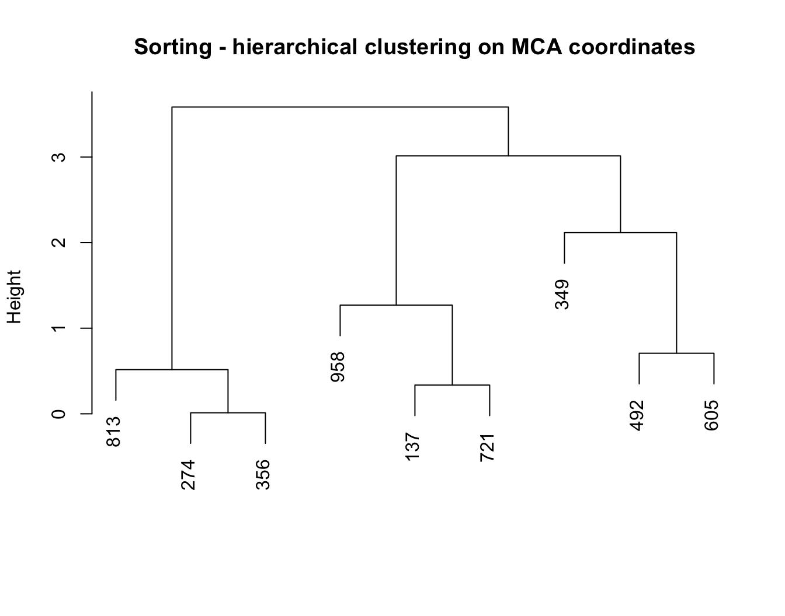
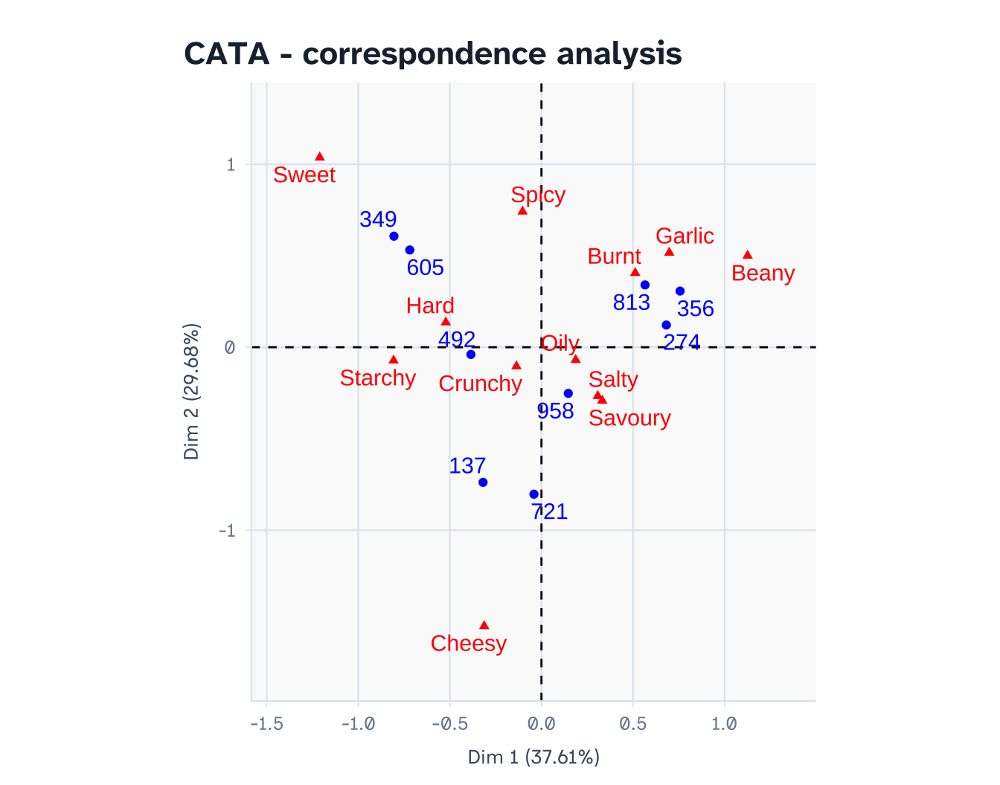

library(readxl)
library(writexl)
library(dplyr)
library(tidyr)
library(ggplot2)
library(ggrepel)
library(FactoMineR) # MCA, CA, coeffRV3 Project 3 — Free sorting vs. CATA on snack chips
Analysis plan (draft) with dummy data
4 Research question
Does a holistic method (free sorting) reveal the same product groupings as an attribute-based method (CATA), and which method do consumers find easier?
Sub-questions:
- Do sorting and CATA produce similar product maps? (RV coefficient)
- Do the groups formed by sorting match the clusters found in CATA?
- Is the vocabulary consumers generate spontaneously (sorting) similar to the fixed CATA list?
- Which method is perceived as easier?
Design. Within-subjects, counterbalanced: the same ~50 untrained consumers do both tasks in one session (half sort first, half CATA first), with a break and fresh samples in between. 9 chips (e.g., keripik tempe, cassava, potato and banana chips in several flavours), 3-digit codes.
5 What to read
Main text — Delarue, J., Lawlor, J.B. & Rogeaux, M. (eds.) Rapid Sensory Profiling Techniques. Woodhead Publishing.
| Chapter | 1st ed. (2015) | 2nd ed. (2023) |
|---|---|---|
| The use of rapid sensory methods in R&D and research: an introduction | Ch. 1 | Ch. 1 |
| Free sorting as a sensory profiling technique for product development | Ch. 7 | Ch. 7 |
| Free multiple sorting as a sensory profiling technique (for the extension below) | Ch. 8 | Ch. 8 |
| Check-all-that-apply (CATA) questions with consumers in practice | Ch. 11 | Ch. 12 |
| Open-ended questions in sensory testing practice (for cleaning the free descriptors) | Ch. 12 | Ch. 13 |
Chapter numbers differ between editions; check which edition your library holds.
Optional papers:
- Lawless, H.T., Sheng, N. & Knoops, S. (1995). Multidimensional scaling of sorting data applied to cheese perception. Food Quality and Preference, 6, 91-98.
- Dehlholm, C., Brockhoff, P.B., Meinert, L., Aaslyng, M.D. & Bredie, W.L.P. (2012). Rapid descriptive sensory methods - Comparison of Free Multiple Sorting, Partial Napping, Napping, Flash Profiling and conventional profiling. Food Quality and Preference, 26, 267-277.
6 Google Form setup
Use three short forms.
6.1 Form 1 — Sorting (one response per panelist)
Panelists taste all 9 samples and group them on the table: similar samples together. At least 2 groups, at most 8 (not all in one group, not each sample alone).
| # | Question | Type | Notes |
|---|---|---|---|
| 1 | Panelist ID | Short answer | Number |
| 2 | Order | Multiple choice | Sorting first / CATA first |
| 3 | Which group did you put each sample in? | Multiple-choice grid | Rows = 9 sample codes. Columns = Group 1 … Group 8. Require a response in each row |
| 4-11 | Describe Group 1 in a few words … Describe Group 8 in a few words | Short answer | Not required (leave unused groups blank). Ask for words separated by commas |
The group numbers are only labels: “Group 1” for one panelist has nothing to do with “Group 1” for another. The analysis handles this.
6.2 Form 2 — CATA (one response per sample)
| # | Question | Type | Notes |
|---|---|---|---|
| 1 | Panelist ID | Short answer | Number |
| 2 | Sample code | Dropdown | 9 codes |
| 3 | Which of these terms describe this sample? | Checkboxes | 12 terms, Shuffle option order |
CATA terms: Crunchy, Hard, Oily, Salty, Spicy, Sweet, Savoury, Beany, Garlic, Cheesy, Starchy, Burnt.
6.3 Form 3 — Feedback (one response per panelist, end of session)
| # | Question | Type |
|---|---|---|
| 1 | Panelist ID | Short answer |
| 2 | How easy was the sorting task? | Linear scale 1-7 |
| 3 | How easy was the checklist (CATA) task? | Linear scale 1-7 |
7 What the exported .xlsx looks like
Google Forms always adds a Timestamp column as the first column. It is not used in this analysis, so you can delete it or simply ignore it (the code selects columns by name).
Sorting — one row per panelist; the grid becomes one column per sample:
| Panelist ID | Order | Which group did you put each sample in? [274] | … [813] | … | Describe Group 1 in a few words | … |
|---|---|---|---|---|---|---|
| 1 | Sorting first | Group 2 | Group 1 | … | Pedas, gurih dan enak | … |
CATA — same as in Project 1 (one row per panelist × sample, ticked terms comma-separated).
Feedback — one row per panelist, two ease scores.
8 Dummy data
set.seed(2026)
terms <- c("Crunchy","Hard","Oily","Salty","Spicy","Sweet",
"Savoury","Beany","Garlic","Cheesy","Starchy","Burnt")
chips <- data.frame(
id = c("Tempe_original","Tempe_spicy","Tempe_garlic","Cassava_original",
"Cassava_balado","Cassava_cheese","Potato_salted","Potato_cheese","Banana_sweet"),
code = c("274","813","356","492","605","137","958","721","349"))
# Cru Har Oil Sal Spi Swe Sav Bea Gar Che Sta Bur
prof <- rbind(c( 2, 1, 2, 2, 0, 0, 2, 3, 1, 0, 0, 1),
c( 2, 1, 2, 2, 3, 0, 2, 3, 1, 0, 0, 1),
c( 2, 1, 2, 2, 0, 0, 2, 3, 3, 0, 0, 1),
c( 3, 3, 1, 2, 0, 0, 1, 0, 1, 0, 3, 0),
c( 3, 3, 1, 1, 3, 2, 1, 0, 1, 0, 3, 0),
c( 3, 2, 1, 2, 0, 0, 2, 0, 0, 3, 2, 0),
c( 3, 1, 3, 3, 0, 0, 2, 0, 0, 0, 1, 0),
c( 3, 1, 3, 2, 0, 0, 2, 0, 0, 3, 1, 0),
c( 2, 2, 2, 0, 0, 3, 0, 0, 0, 0, 1, 1))
dimnames(prof) <- list(chips$code, terms)
# Words people would use for each attribute: English, Indonesian, and some words that are
# not in the CATA list (e.g., "thick", "homemade", "artificial", "banana").
say <- list(Crunchy = c(crunchy = 3, renyah = 3, kriuk = 2),
Hard = c(hard = 3, keras = 3, "hard to bite" = 1),
Oily = c(oily = 3, berminyak = 2, greasy = 2),
Salty = c(salty = 3, asin = 3),
Spicy = c(spicy = 3, pedas = 4, "chili" = 1),
Sweet = c(sweet = 3, manis = 3, banana = 2, fruity = 1),
Savoury = c(savoury = 3, gurih = 4, umami = 1),
Beany = c("tempe taste" = 3, beany = 2, kedelai = 1, homemade = 2),
Garlic = c(garlic = 3, bawang = 3),
Cheesy = c(cheesy = 3, keju = 3, artificial = 2),
Starchy = c(starchy = 2, cassava = 3, singkong = 2, thick = 2),
Burnt = c(burnt = 3, gosong = 2))
hedonic <- c("enak", "nice", "good", "suka", "favourite", "biasa aja")
describe_group <- function(centroid) {
w8 <- pmax(centroid - 0.8, 0)^2 # strong attributes are mentioned most
n <- min(sum(w8 > 0), sample(2:4, 1, prob = c(3, 4, 2)))
if (n == 0) return("")
att <- sample(names(w8), n, prob = w8 + 1e-9)
w <- sapply(att, function(a) sample(names(say[[a]]), 1, prob = say[[a]]))
if (runif(1) < .2) w <- c(w, sample(hedonic, 1))
w <- ifelse(runif(length(w)) < .1, paste0(toupper(substr(w, 1, 1)), substring(w, 2)), w)
paste(unique(w), collapse = sample(c(", ", ", ", ", ", "; ", " dan "), 1))
}
n_pan <- 50
# ---- Sorting ----
sort_raw <- bind_rows(lapply(1:n_pan, function(p) {
perc <- prof + matrix(rnorm(length(prof), 0, 0.9), nrow(prof))
k <- sample(2:5, 1, prob = c(1, 3, 3, 2))
grp <- kmeans(perc, centers = k, nstart = 10)$cluster
grp <- match(grp, unique(grp)) # relabel 1, 2, 3 ...
row <- data.frame(`Panelist ID` = p,
Order = ifelse(p %% 2 == 1, "Sorting first", "CATA first"),
check.names = FALSE)
for (i in seq_along(chips$code))
row[[paste0("Which group did you put each sample in? [", chips$code[i], "]")]] <-
paste("Group", grp[i])
for (g in 1:8) {
w <- ""
if (g <= k) {
w <- describe_group(colMeans(perc[grp == g, , drop = FALSE]))
}
row[[paste0("Describe Group ", g, " in a few words")]] <- w
}
row
}))
# ---- CATA ----
cata_rows <- list()
for (p in 1:n_pan) {
for (cd in sample(chips$code)) {
latent <- prof[cd, ] + rnorm(length(terms), 0, 0.8)
cata_rows[[length(cata_rows) + 1]] <- data.frame(
`Panelist ID` = p, `Sample code` = cd,
`Which of these terms describe this sample?` = paste(terms[latent > 1.6], collapse = ", "),
check.names = FALSE)
}
}
cata_raw <- bind_rows(cata_rows)
# ---- Feedback ----
feedback_raw <- data.frame(`Panelist ID` = 1:n_pan,
`How easy was the sorting task?` = sample(2:7, n_pan, TRUE, prob = c(1,1,2,3,3,2)),
`How easy was the checklist (CATA) task?` = sample(2:7, n_pan, TRUE, prob = c(1,2,3,3,2,1)),
check.names = FALSE)
write_xlsx(sort_raw, "P3_Sorting_responses.xlsx")
write_xlsx(cata_raw, "P3_CATA_responses.xlsx")
write_xlsx(feedback_raw, "P3_Feedback_responses.xlsx")9 Import and reshape
sort_raw <- read_excel("P3_Sorting_responses.xlsx")
cata_raw <- read_excel("P3_CATA_responses.xlsx")
feedback_raw <- read_excel("P3_Feedback_responses.xlsx")Sorting → product × panelist table of group labels. Each column is one panelist; the cells are that panelist’s group labels (categorical).
grid_cols <- grep("^Which group did you put each sample in\\?", names(sort_raw), value = TRUE)
sort_long <- sort_raw %>%
select(panelist = `Panelist ID`, all_of(grid_cols)) %>%
pivot_longer(-panelist, names_to = "q", values_to = "group") %>%
mutate(code = sub(".*\\[(\\d+)\\]$", "\\1", q))
sort_mat <- sort_long %>%
mutate(panelist = paste0("P", panelist)) %>%
select(code, panelist, group) %>%
pivot_wider(names_from = panelist, values_from = group) %>%
arrange(code) %>% tibble::column_to_rownames("code") %>%
mutate(across(everything(), as.factor))
sort_mat[, 1:6]Co-occurrence (similarity) matrix — how many panelists put each pair of samples in the same group. This is the most intuitive summary of sorting data.
codes <- rownames(sort_mat)
co <- matrix(0, length(codes), length(codes), dimnames = list(codes, codes))
for (j in seq_along(sort_mat)) {
g <- sort_mat[[j]]
co <- co + outer(g, g, "==")
}
co 137 274 349 356 492 605 721 813 958
137 50 4 6 4 21 9 40 5 22
274 4 50 5 47 5 1 8 29 11
349 6 5 50 5 22 28 8 8 14
356 4 47 5 50 6 1 8 30 10
492 21 5 22 6 50 27 14 5 21
605 9 1 28 1 27 50 4 8 14
721 40 8 8 8 14 4 50 9 24
813 5 29 8 30 5 8 9 50 11
958 22 11 14 10 21 14 24 11 50as.data.frame(as.table(co)) %>%
ggplot(aes(Var1, Var2, fill = Freq)) + geom_tile() +
geom_text(aes(label = Freq), size = 3) +
scale_fill_gradient(low = "white", high = "darkorange") +
labs(title = "Number of panelists grouping each pair together", x = NULL, y = NULL) +
theme_minimal()
Group descriptions → cleaned words per product. Look at the raw descriptions first:
sort_raw %>% select(starts_with("Describe Group")) %>% select(1:3) %>% head(8)Each product inherits the words of the group it was put in. Cleaning: split into single descriptors, lower-case, merge synonyms and Indonesian words into one English term, and remove hedonic words. Words that are not in the CATA list (e.g., thick, homemade, artificial, banana) are kept: they are one of the results of this project.
synonyms <- c(renyah = "crunchy", kriuk = "crunchy", keras = "hard", "hard to bite" = "hard",
berminyak = "oily", greasy = "oily", asin = "salty", pedas = "spicy",
chili = "spicy", manis = "sweet", gurih = "savoury", umami = "savoury",
"tempe taste" = "beany", kedelai = "beany", bawang = "garlic", keju = "cheesy",
cassava = "starchy", singkong = "starchy", gosong = "burnt", fruity = "banana")
hedonic <- c("enak", "nice", "good", "suka", "favourite", "biasa aja")
desc <- sort_raw %>%
select(panelist = `Panelist ID`, starts_with("Describe Group")) %>%
pivot_longer(-panelist, names_to = "q", values_to = "words") %>%
mutate(group = paste("Group", sub("^Describe Group (\\d+).*", "\\1", q))) %>%
filter(!is.na(words), words != "") %>%
separate_rows(words, sep = "\\s*[,;/]\\s*|\\s+(dan|and)\\s+") %>%
mutate(words = tolower(trimws(words)),
words = ifelse(words %in% names(synonyms), synonyms[words], words)) %>%
filter(words != "", !words %in% hedonic) %>%
distinct(panelist, group, words)
word_long <- sort_long %>% inner_join(desc, by = c("panelist", "group"),
relationship = "many-to-many")
sort_words <- as.data.frame.matrix(table(word_long$code, word_long$words))
sort_words <- sort_words[, colSums(sort_words) >= 10] # keep words cited at least 10 times
sort_wordsCATA → binary long format (same code as Project 1).
cata <- cata_raw %>%
rename(panelist = `Panelist ID`, sample = `Sample code`,
terms_ticked = `Which of these terms describe this sample?`) %>%
mutate(panelist = factor(panelist), sample = factor(sample))
for (a in terms) cata[[a]] <- as.integer(grepl(paste0("\\b", a, "\\b"), cata$terms_ticked))
cata <- cata %>% select(panelist, sample, all_of(terms))10 Analysis
10.1 Sorting: multiple correspondence analysis (MCA)
Treating each panelist’s partition as a categorical variable and running MCA is the approach of the fast() function in SensoMineR.
mca <- MCA(sort_mat, graph = FALSE)
round(mca$eig[1:4, ], 1) eigenvalue percentage of variance cumulative percentage of variance
dim 1 0.7 30.6 30.6
dim 2 0.6 24.4 55.0
dim 3 0.3 11.4 66.4
dim 4 0.3 10.9 77.2Each word is placed at the weighted average position of the products it was used for (weights = number of citations). Words used for one type of chip sit next to those chips; words used for many chips end up near the centre.
sort_coord <- data.frame(mca$ind$coord[, 1:2], code = codes)
word_xy <- t(as.matrix(sort_words)) %*% mca$ind$coord[rownames(sort_words), 1:2] /
colSums(sort_words)
word_coord <- data.frame(word_xy, word = colnames(sort_words), n = colSums(sort_words),
in_cata = colnames(sort_words) %in% tolower(terms))
ggplot() +
geom_hline(yintercept = 0, lty = 2, colour = "grey60") +
geom_vline(xintercept = 0, lty = 2, colour = "grey60") +
geom_point(data = sort_coord, aes(Dim.1, Dim.2), size = 3) +
geom_text_repel(data = sort_coord, aes(Dim.1, Dim.2, label = code), fontface = "bold") +
geom_text_repel(data = word_coord, aes(Dim.1, Dim.2, label = word, size = n, colour = in_cata),
fontface = "italic", max.overlaps = Inf) +
scale_size(range = c(3, 5), guide = "none") +
scale_colour_manual(values = c(`TRUE` = "steelblue", `FALSE` = "darkorange"),
labels = c(`TRUE` = "in CATA list", `FALSE` = "not in CATA list"),
name = NULL) +
labs(title = "Free sorting - MCA product map with group descriptors",
subtitle = "Words placed at the weighted average of the products they describe",
x = sprintf("Dim 1 (%.1f%%)", mca$eig[1, 2]),
y = sprintf("Dim 2 (%.1f%%)", mca$eig[2, 2])) +
theme_minimal()
Note: in MCA the % of variance is always low (many dimensions). Judge the map by whether it makes sense, not by the %. If SensoMineR is installed, SensoMineR::fast(sort_mat) gives an equivalent analysis; DistatisR offers DISTATIS as an alternative.
10.2 Sorting: clusters of products
hc_sort <- hclust(dist(mca$ind$coord[, 1:3]), method = "ward.D2")
plot(hc_sort, main = "Sorting - hierarchical clustering on MCA coordinates", xlab = "", sub = "")
sort_clusters <- cutree(hc_sort, k = 4)
sort_clusters137 274 349 356 492 605 721 813 958
1 2 3 2 4 4 1 2 1 10.3 CATA: Cochran’s Q and correspondence analysis
cochran_q <- function(y, block, treat) {
m <- tapply(y, list(block, treat), sum)
k <- ncol(m); Cj <- colSums(m); Ri <- rowSums(m); N <- sum(m)
Q <- (k - 1) * (k * sum(Cj^2) - N^2) / (k * N - sum(Ri^2))
c(Q = Q, p = pchisq(Q, k - 1, lower.tail = FALSE))
}
cata_q <- data.frame(term = terms,
t(sapply(terms, function(a) cochran_q(cata[[a]], cata$panelist, cata$sample))))
cata_q$significant <- cata_q$p < 0.05
cata_qcata_freq <- cata %>% group_by(sample) %>% summarise(across(all_of(terms), sum)) %>%
tibble::column_to_rownames("sample") %>% as.matrix()
sig <- cata_q$term[cata_q$significant]
ca <- CA(cata_freq[, sig], graph = FALSE)
round(ca$eig[1:3, ], 1) eigenvalue percentage of variance cumulative percentage of variance
dim 1 0.3 37.6 37.6
dim 2 0.2 29.7 67.3
dim 3 0.1 12.6 79.9plot(ca, title = "CATA - correspondence analysis")
hc_cata <- hclust(dist(ca$row$coord[codes, 1:3]), method = "ward.D2")
cata_clusters <- cutree(hc_cata, k = 4)10.4 Comparing the two methods
10.4.1 RV coefficient between the maps
X <- mca$ind$coord[codes, 1:2]
Y <- ca$row$coord[codes, 1:2]
rv <- coeffRV(X, Y)
rv[c("rv", "rvstd", "p.value")]$rv
[1] 0.9450374
$rvstd
[1] 5.173614
$p.value
[1] 0.000163122810.4.2 Do the clusters agree?
Cross-tabulate the clusters from both methods. The adjusted Rand index (ARI) summarises agreement between two partitions: 1 = identical, 0 = no better than chance.
table(sorting = sort_clusters, CATA = cata_clusters[names(sort_clusters)]) CATA
sorting 1 2 3 4
1 3 0 0 0
2 0 3 0 0
3 0 0 1 0
4 1 0 0 1ari <- function(a, b) {
tab <- table(a, b); n <- sum(tab)
sc <- sum(choose(tab, 2)); sa <- sum(choose(rowSums(tab), 2)); sb <- sum(choose(colSums(tab), 2))
exp <- sa * sb / choose(n, 2)
(sc - exp) / ((sa + sb) / 2 - exp)
}
ARI <- ari(sort_clusters, cata_clusters[names(sort_clusters)])
ARI[1] 0.6810.4.3 Spontaneous vs. fixed vocabulary
Which terms did consumers come up with themselves? Which CATA terms were never used spontaneously?
spont <- colSums(sort_words)
list(
in_both = intersect(names(spont), tolower(terms)),
only_spontaneous = setdiff(names(spont), tolower(terms)),
only_in_CATA_list = setdiff(tolower(terms), names(spont)))$in_both
[1] "beany" "burnt" "cheesy" "crunchy" "garlic" "hard" "oily"
[8] "salty" "savoury" "spicy" "starchy" "sweet"
$only_spontaneous
[1] "artificial" "banana" "homemade" "thick"
$only_in_CATA_list
character(0)10.4.4 Ease
ease <- feedback_raw %>%
rename(Sorting = `How easy was the sorting task?`,
CATA = `How easy was the checklist (CATA) task?`)
summary(ease[, c("Sorting", "CATA")]) Sorting CATA
Min. :2 Min. :2.00
1st Qu.:4 1st Qu.:4.00
Median :5 Median :5.00
Mean :5 Mean :4.72
3rd Qu.:6 3rd Qu.:6.00
Max. :7 Max. :7.00 wilcox.test(ease$Sorting, ease$CATA, paired = TRUE)
Wilcoxon signed rank test with continuity correction
data: ease$Sorting and ease$CATA
V = 502, p-value = 0.3507
alternative hypothesis: true location shift is not equal to 010.4.5 Summary table for the poster
data.frame(
Criterion = c("Product map", "Discriminating CATA terms", "RV between maps (p-value)",
"Cluster agreement (ARI)", "Median ease (1-7)", "Vocabulary"),
Sorting = c("MCA", "-", sprintf("%.2f (p = %.3f)", rv$rv, rv$p.value),
round(ARI, 2), median(ease$Sorting), "spontaneous, needs cleaning"),
CATA = c("CA", length(sig), "", "", median(ease$CATA), "fixed list"))11 Interpretation
With the dummy data (your numbers will differ):
- The sorting map separates the tempe chips, the cassava chips, the potato chips and the banana chips. The spontaneous descriptors (e.g., beany, starchy, cheesy, sweet) explain why, and words not in the CATA list (thick, homemade, artificial, banana) land next to the chips they describe: a hint that the CATA list could be improved.
- RV = 0.95 (p = <0.001) and ARI = 0.68: both methods recover the same overall structure.
- Look at the co-occurrence matrix for the fine differences: e.g., tempe original vs. tempe garlic. Sorting tends to merge products that share a dominant character (all tempe chips together). CATA can still separate them if a term (here Garlic) captures the difference.
How to write the conclusion.
- Sorting is holistic: it shows what consumers see as the main differences. It is weak at fine differences within a group.
- CATA is analytic: it can separate products on any listed term, but only on terms you put in the list. Check the “only spontaneous” vocabulary: those are attributes your CATA list missed.
- A good practical recommendation is often to use sorting first, to discover the product space and vocabulary, then build the CATA list from the sorting words.